Criar uma simples Embalagem e expositor e renderizar em Cycles
Neste exercício, vamos construir um expositor e embalagens que representam os cursos da ESEV. As imagens utilizadas foram retiradas
da página oficial da ESEV.
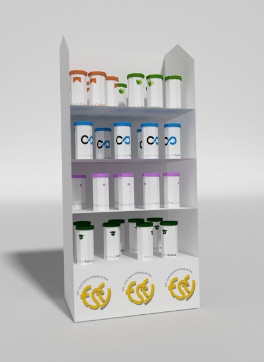
1. Comece por adicionar um cilindro com 8 vértices, altura de 4 unidades e sem preenchimento no topo e base.
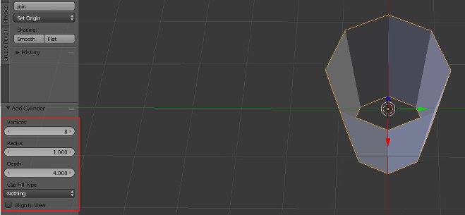
2. Selecione a linha de vértices do topo. Coloque-se em visão de topo, modo ortogonal. Faça extrude (E) mas não mova o rato, clique no Enter.
Depois altere a escala (S), aumente ligeiramente como na imagem abaixo.
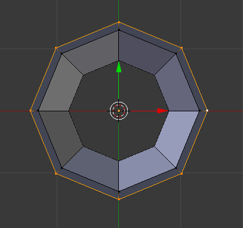
3. Coloque-se lado e faça um novo Extrude no eixo Z seguindo a imagem abaixo.
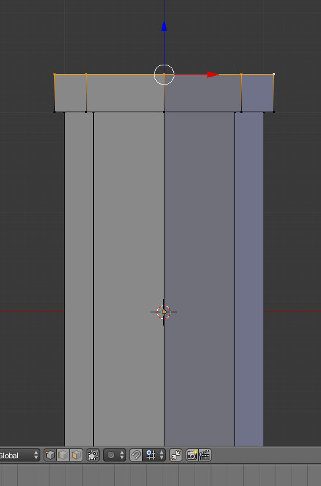
4. Coloque-se em visão de topo, modo ortogonal. Faça extrude (E) mas não mova o rato, clique no Enter.
Depois altere a escala (S), aumente ligeiramente como na imagem abaixo.
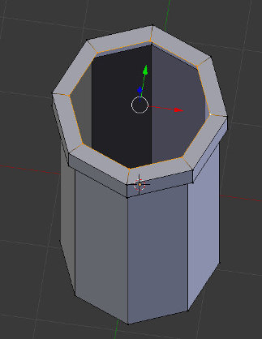
5. Faça um novo Extrude em Z mas desta feita desça os vértices obtendo a forma da imagem abaixo.
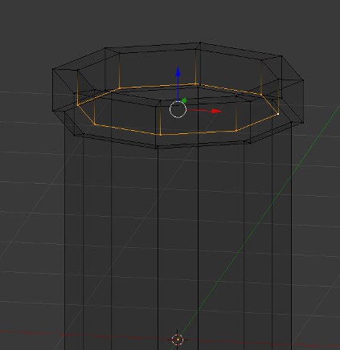
6. Coloque-se em visão de topo, modo ortogonal. Faça extrude (E) mas não mova o rato, clique no Enter.
Depois altere a escala (S), clique em 0 para reduzir a dimensão a 0 e fechar o topo do objeto (vértices irão unir-se no centro.

7. Selecione os vértices da base e repita o passo anterior para fechar a base do objeto.
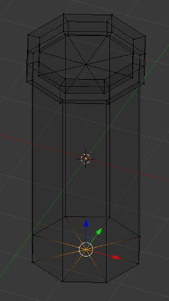
8. Deverá obter uma forma similar à da imagem abaixo.
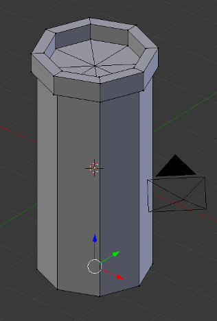
9. Crie um material para o objeto. No nosso caso, demos o nome embalagem. Crie um novo material (rotulo - evite utilizar acentos) e aplique-o apenas
às faces indicadas na imagem.
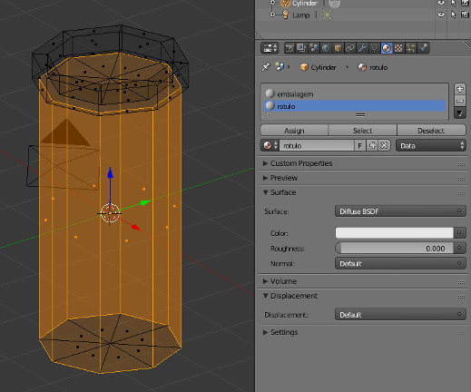
10. Selecione as arestas indicadas abaixo e utilize o atalho CTRL+E para criar as Seams (Mark Seams) para o UV Map.
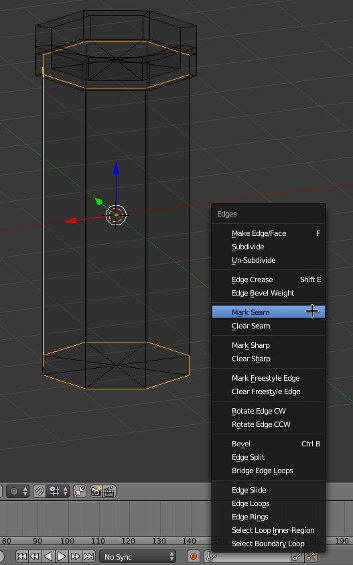
11. Divida a área de trabalho abrindo uma janela do tipo UV/Image Editor. Selecione as faces do rótulo, clique em U e escolha Unwrap.
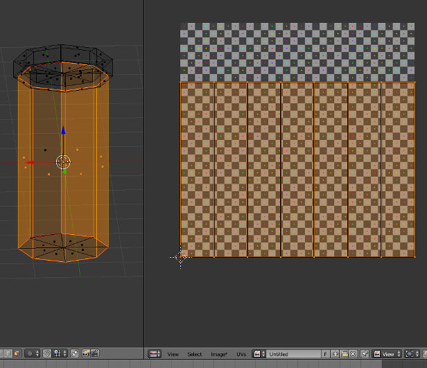
12. Na janela UV/Image Editor exporte o UV Layout.
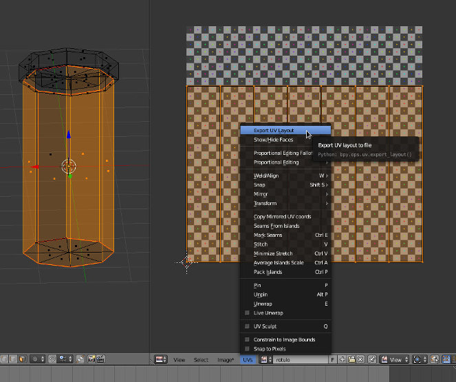
13. Utilize um editor de imagem para construir os rótulos para os diversos cursos tendo por base o UV Layout exportado..
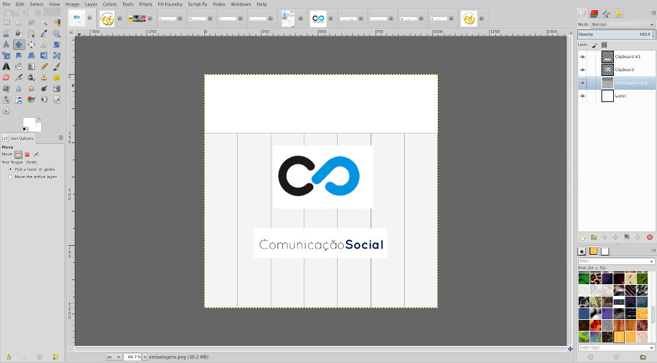
14. De volta ao Blender, na janela UV/Image Editor faça Open Image (Image) e selecione o rótulo criado.
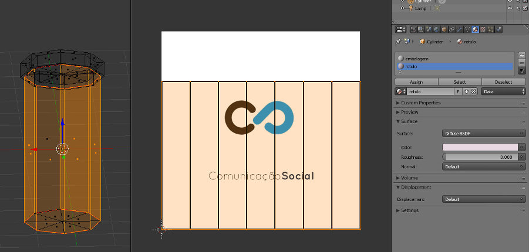
15. Configure o material rótulo para inserir a sua imagem. O nó Image Texture permite aceder a um menu onde está disponível a imagem
inserida no passo anterior.
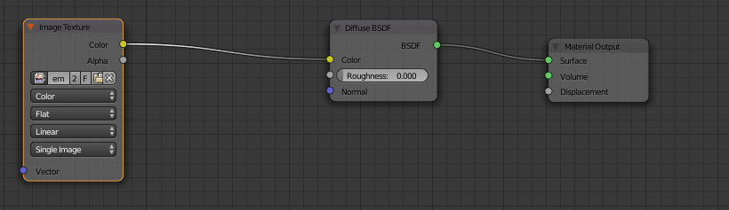
16. Configure o material embalagem. No nosso caso, foi utilizada a ferramenta de seleção de cores para escolher para o material
embalagem a mesma cor azul existente no rótulo.
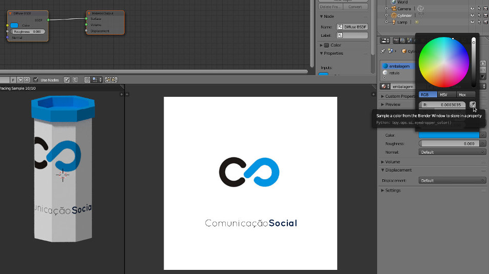
17. Duplique a embalagem tantas vezes quantas as necessárias/desejadas para criar novas embalagens de curso.
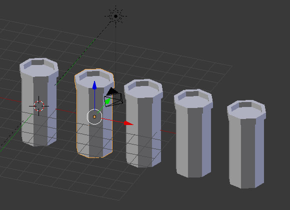
18. As novas embalagens estão a utilizar o mesmo material da primeira embalagem. Separe os materiais (pode apagar e recriar os materiais ou
clicar no número existente à direita do nome do material que indica quantos objetos estão a partilhar o material - no nosso caso
esse número já não é visível porque os materiais já foram separados). Atribua nomes fáceis de identificar! Remova a imagem no rótulo e insira
a nova imagem através do Open.
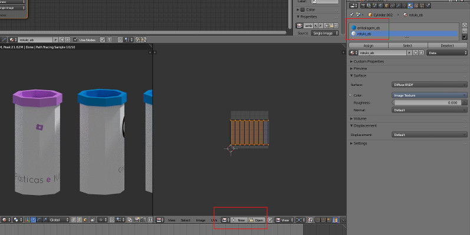
19. Na configuração dos materiais, não se esqueça de trocar a imagem no nó Image Texture!
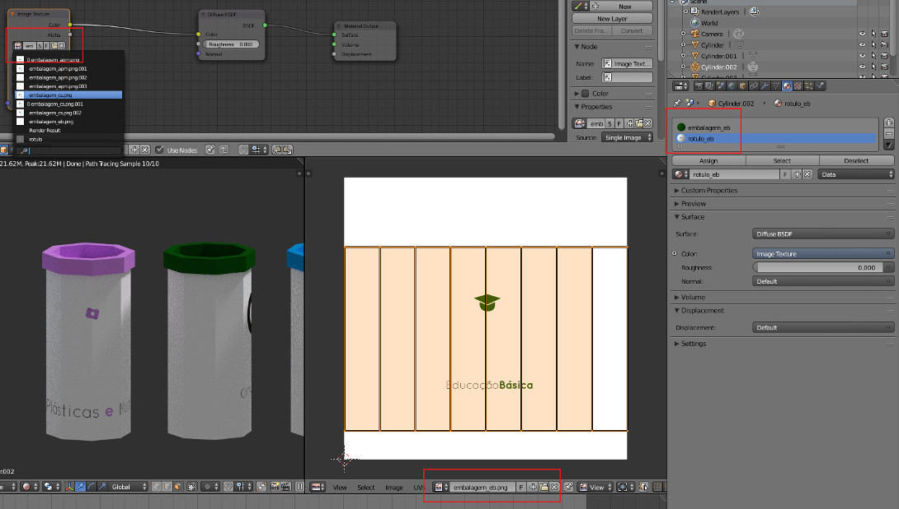
O expositor foi criado a partir de um cubo.
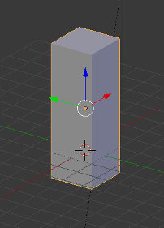
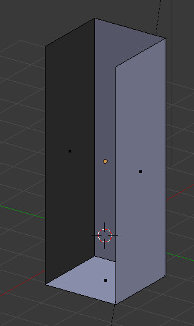
Utilize a ferramente CTRL+R para criar Edge Loops para as prateleiras.
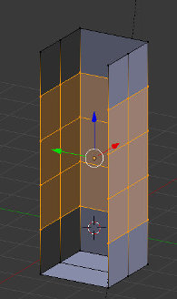
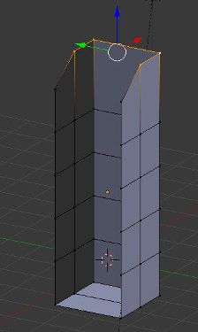
Selecione os vértices e clique em F para criar uma face que irá servir de prateleira.
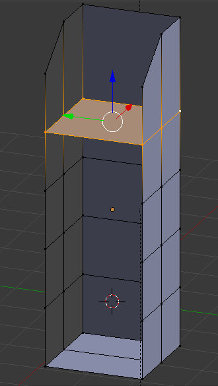
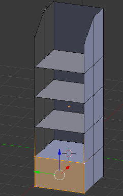
Redimensione o expositor para este ser mais largo.
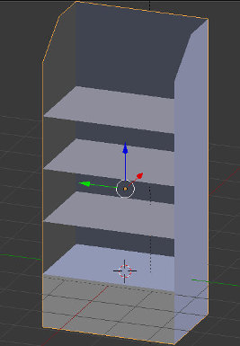
Redimensione as embalagens e coloque-as nas prateleiras.
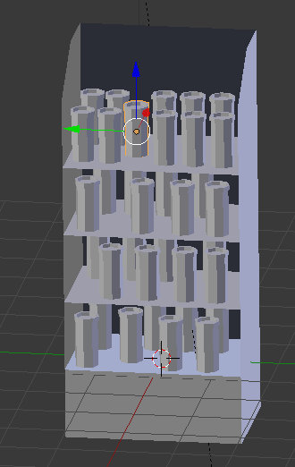